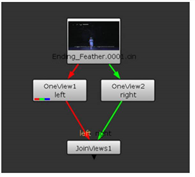

In case you need to perform totally different actions on the two views, you can add a OneView node to separate one view for processing.
| 1. | Select Views > OneView to insert a OneView node in an appropriate place in your script. |
| 2. | In the OneView node’s controls, select the view you want to make changes to from the view dropdown menu. |
All views are extracted, and any changes you make are only applied to the view you selected (regardless of which view you are displaying in the Viewer).
To make changes to a different view, select it from the OneView node’s view dropdown menu.
To merge views from two separate streams, select Views > JoinViews to combine the views (or delete the OneView node from your script).
If you need to extract all views, process them individually, and then merge them together, use the Split and Join menu item. This menu item is actually a combination of the OneView and JoinViews nodes. It first extracts all the views you have set up in your project settings and then merges them back together. It’s no different to using several OneView nodes together with a JoinViews node, but speeds up work, because you don’t need to add each node in a separate go. To use the menu item, select Views > Split and Join.
For example, if you have created views called left and right in your project settings and use a Split and Join menu item after your Read node, you get the following node tree:

You can then add any necessary nodes, such as color corrections, between the OneView and JoinViews nodes.
|
|